CONCURSO DE MURALES USFQ
Mil raíces, una sola copa
La multiculturalidad en la Universidad San Francisco de Quito, pintada sobre tela.
Maribel Amaguaña y Andrea Giller · Dragon Help
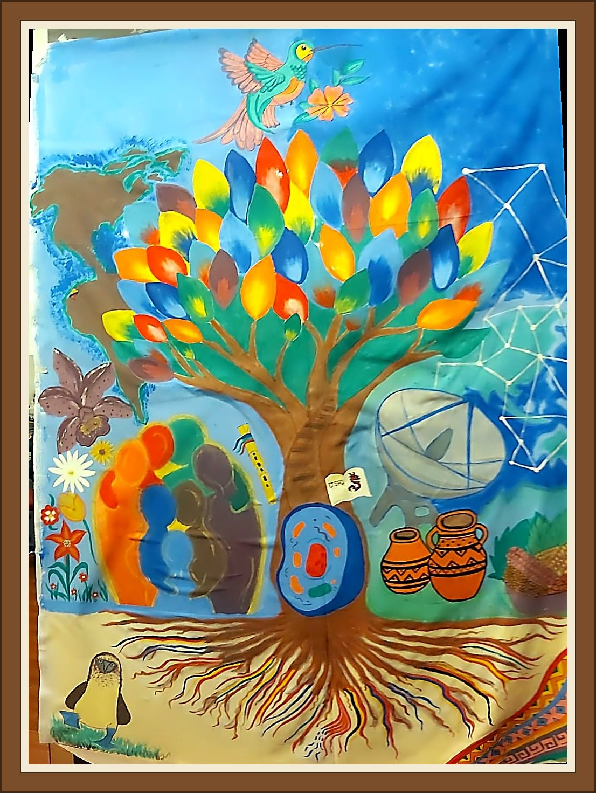
Memoria explicativa
Técnica
Pintura sobre tela, trabajada con pinturas al agua, pinceles de distintas formas y grosores, y también con las manos y los dedos. Los pinceles permitieron trazar desde los contornos más finos hasta las superficies amplias; las manos y los dedos ayudaron a extender el color, mezclarlo y crear degradados y texturas.
Descargar la memoria en PDF para imprimir
Concepto general
En la Universidad San Francisco de Quito conviven estudiantes, docentes y familias de distintas regiones, pueblos y países. Este mural responde a la pregunta guía del concurso: ¿cómo se vive la interculturalidad y la diversidad en la USFQ? Nuestra respuesta es una imagen: un solo árbol, con raíces que vienen de muchos lugares, un tronco que sostiene lo que compartimos y una copa donde cada identidad aporta su propio color.
Lectura de la obra
- El árbol de la vida (centro)Es el eje de la obra. Sus hojas, de colores y degradados distintos, representan a las personas de la comunidad universitaria: ninguna se repite y todas crecen del mismo tronco. El árbol de la vida es, además, un símbolo ancestral presente en muchas culturas del mundo.
- Las raíces-bandera (base)Cada raíz lleva los colores de la bandera de un país. No están todos, pero sí los más representativos de nuestra comunidad. Bajo la tierra, las raíces se entrelazan y recuerdan que toda identidad tiene un origen y que los orígenes se sostienen unos a otros.
- La célula (base del tronco)Donde nace el árbol hay una célula, símbolo de lo que nos une como especie. Más allá de la lengua, el origen o la tradición, todos compartimos la misma unidad de vida: la diversidad cultural florece sobre una identidad humana común.
- El libro de la USFQ (tronco)Sobre el tronco, junto a la célula, descansa un libro abierto con el nombre y el dragón de la USFQ. Representa el conocimiento y la misión académica de la universidad: el lugar donde las culturas se encuentran para aprender unas de otras.
- Los siete continentes abrazados (izquierda)Figuras humanas de distintos colores, una por cada continente, se funden en un abrazo. En ellas se ve el encuentro, el respeto y el sentido de pertenencia que buscamos en el campus: la diferencia no separa, acerca.
- El mapa de América (izquierda)El continente americano se extiende detrás del árbol, en el lado izquierdo del mural. Nos recuerda el territorio donde está la universidad y desde donde nuestra comunidad mira y se conecta con el resto del mundo.
- La orquídea y las flores (izquierda)Una orquídea representa la Amazonía ecuatoriana, una de las regiones más biodiversas del planeta y hogar de pueblos y saberes ancestrales. La acompañan flores de distintas especies y colores que, como las personas, comparten un mismo jardín.
- La quena (junto a las figuras)La música es un lenguaje que no necesita traducción. La quena, flauta tradicional andina, suena junto al abrazo de los continentes y recuerda que las culturas también se comunican a través de sonidos y celebraciones.
- El colibrí (sobre la copa)Un colibrí con una flor corona el árbol. Es polinizador y viajero incansable: simboliza la libertad y el intercambio que lleva vida de una flor a otra, como las ideas que viajan entre personas de orígenes distintos. Ecuador es uno de los países con mayor diversidad de colibríes del mundo.
- El piquero de patas azules (abajo a la izquierda)Parado sobre la hierba, el piquero de patas azules representa la sede de la USFQ en Galápagos, laboratorio natural de la evolución. Simboliza la ciencia, la investigación y el compromiso de la universidad con la conservación y la diversidad de la vida en el Ecuador.
- Las vasijas de barro y el plato de maíces (derecha)Bajo la antena, dos vasijas de barro con motivos geométricos acompañan un plato con maíz negro, maíz blanco y otros granos. Evocan la cultura material, la memoria ancestral y la tierra que alimenta: la raíz andina desde la cual la USFQ dialoga con el mundo.
- El mapa de Europa y la red global (derecha)Sobre el mapa de Europa, en el lado derecho, una red de puntos conectados une lugares y personas. Responde al mapa de América del lado izquierdo: dos orillas del mundo que se reconocen y se comunican a través de la tecnología.
- La antena de transmisión (derecha)Una antena de transmisión se alza bajo esa red y simboliza la tecnología como puente entre culturas. Desde Dragon Help sabemos que la conectividad permite que una universidad en Ecuador colabore, comparta conocimiento y se encuentre con el mundo.
- El textil andino (abajo a la derecha)En la esquina inferior derecha, un textil andino de colores y motivos geométricos representa la sabiduría de los pueblos originarios. Cada hilo guarda una historia, y la comunidad, como un tejido, se construye entre todos.
Trabajo en equipo
El mural se pensó, dibujó y pintó entre las dos autoras, de principio a fin: desde el boceto a lápiz hasta el último detalle de color. Las fotografías y los videos de la galería digital muestran ese proceso compartido.
Mensaje final
Una universidad multicultural no es la suma de identidades separadas, sino un tejido: raíces, ciencia, tradición y tecnología que crecen juntas. Este árbol invita a la comunidad USFQ a reconocerse en una misma copa, con muchas raíces, muchos colores y una sola vida compartida.
La obra terminada
Toca una foto para ampliarla.
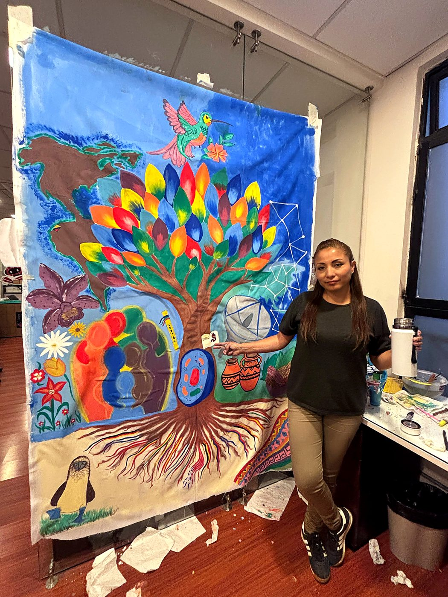
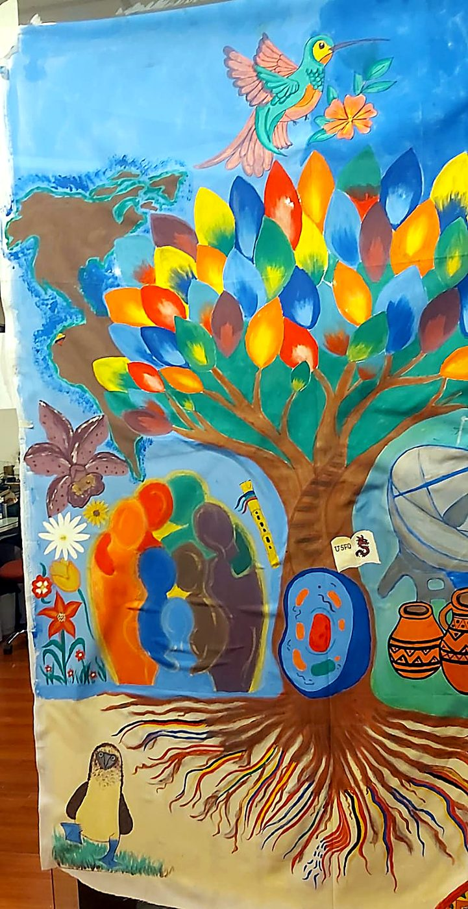
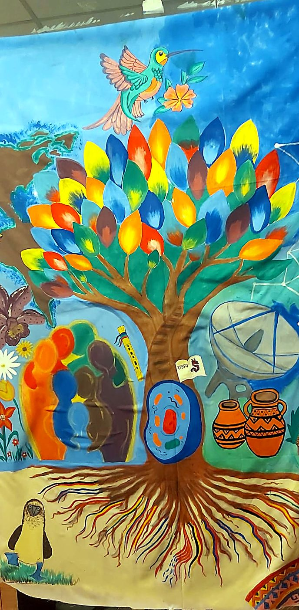
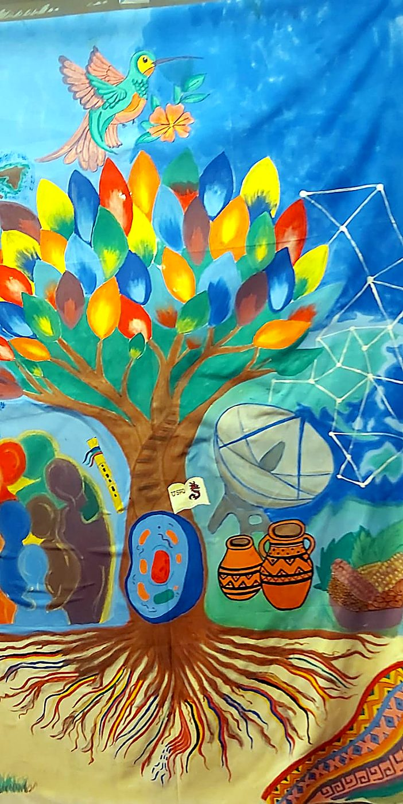
El proceso
Del boceto a lápiz a la pintura, en dieciséis momentos.

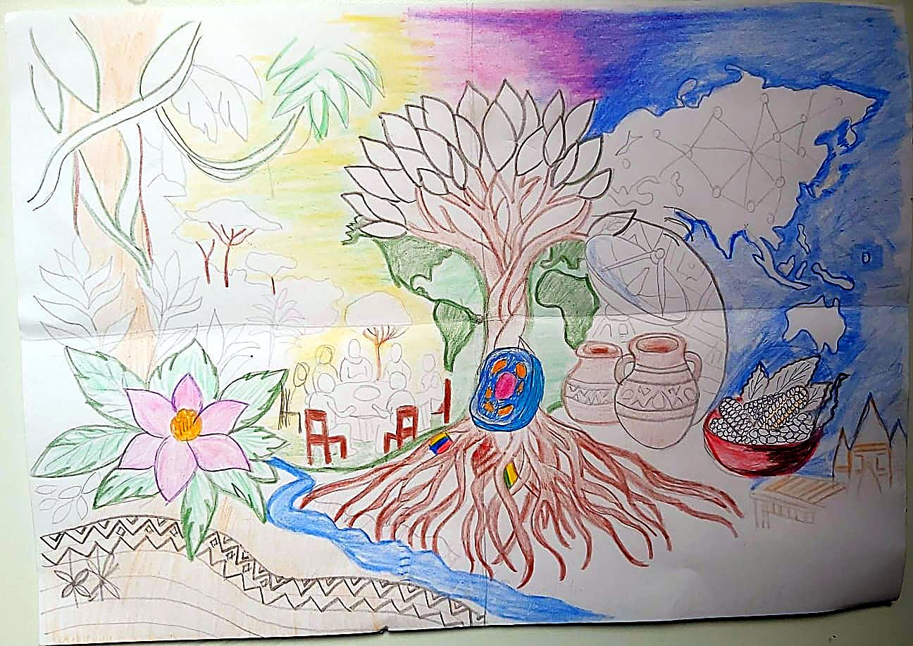


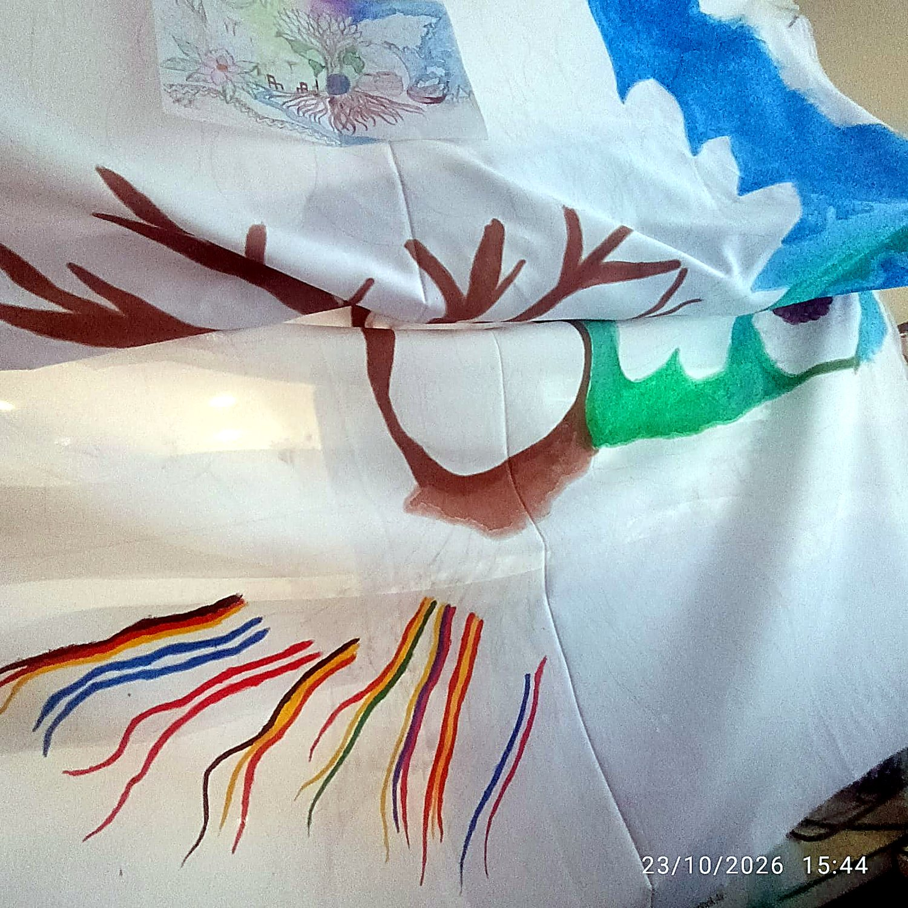


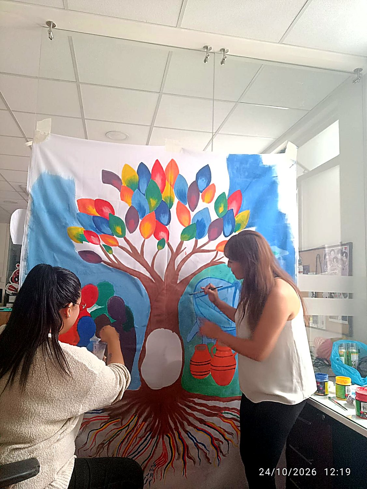


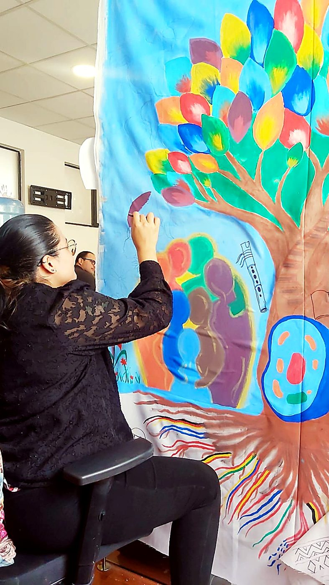
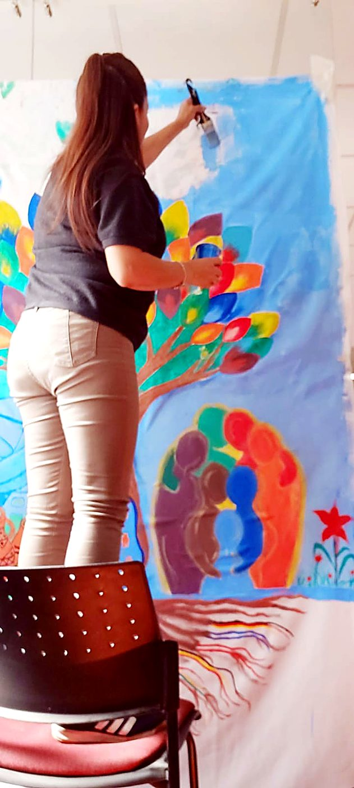
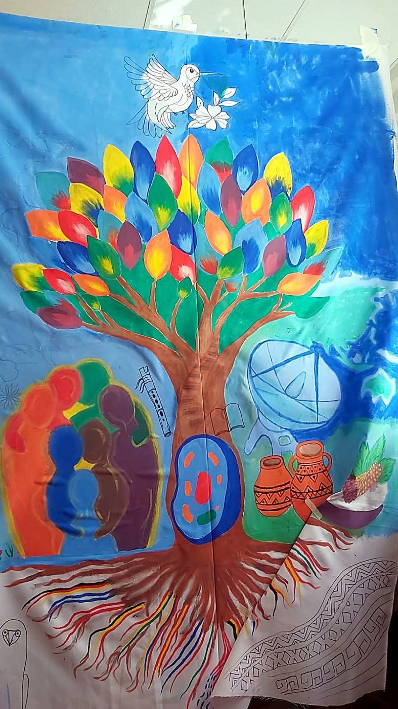
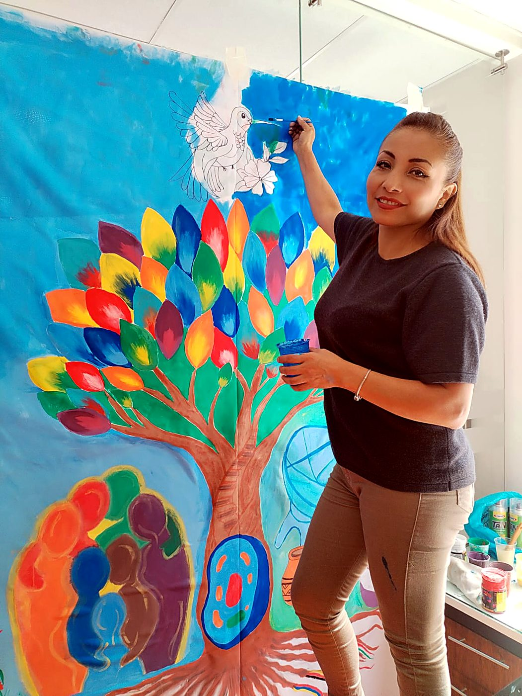
En video
Con música suave de fondo. Activa el sonido para escucharla.